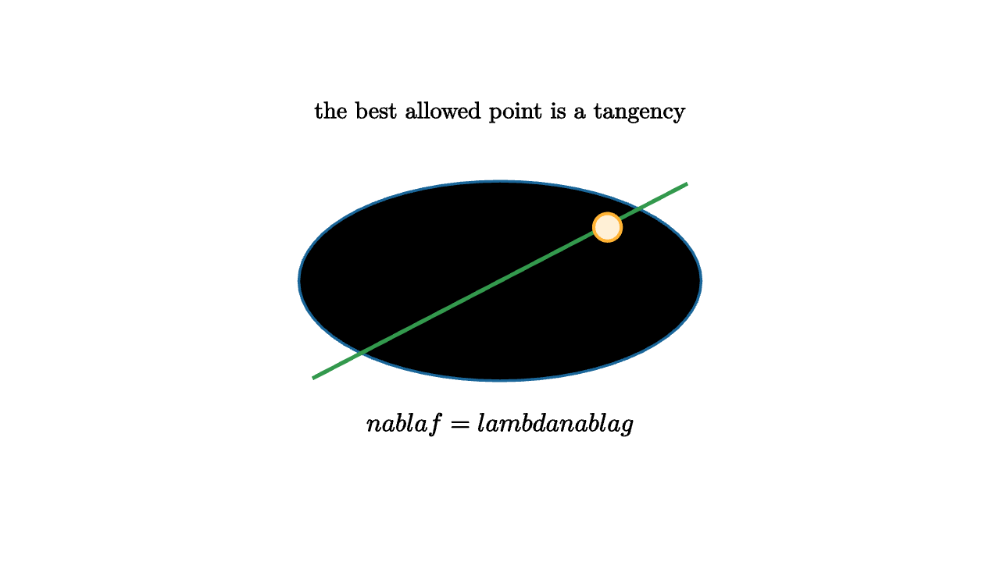

Constrained Optimization Uses Touching Contours
A factory wants maximum output with a fixed budget. A traveler wants the warmest campsite along a trail. An engineer wants the lightest design that still meets a strength requirement. In each problem, the best point is chosen from a restricted set. You are allowed to move, but only along the constraint.
Constrained optimization becomes visual when you draw level curves. Let $f(x,y)$ be the quantity you want to optimize, and let
describe the allowed curve. The level curves of $f$ sweep through the plane like contour lines on a map. The constraint is the path you must stay on.
At the best constrained point, the highest reachable contour usually just touches the constraint. If a contour crossed the constraint, you could keep walking along the constraint to reach nearby points with larger or smaller values of $f$. At a smooth interior optimum, the contour and the constraint are tangent.

source
let soft = |col, amount| lerp(WHITE, col, amount)
let Ellipse = |r, col| stroke{col, 2} scale{[1.45, 0.72, 1]} Circle(r)
mesh diagram = [
Ellipse(0.45, soft(BLUE, 0.15)),
Ellipse(0.78, soft(BLUE, 0.1)),
Ellipse(1.11, BLUE),
stroke{GREEN, 3} Line(1.5l + 0.78d, 1.5r + 0.78u),
center{[0.86, 0.43, 0]} fill{soft(ORANGE, 0.2)} stroke{ORANGE, 2.4} Circle(0.11),
center{1.35u} Text("the best allowed point is a tangency", 0.68),
center{1.15d} Tex("\\nabla f=\\lambda \\nabla g", 0.74)
]The gradient explains the algebra. Gradients are perpendicular to level curves. If the level curve of $f$ is tangent to the constraint curve $g=c$, then their perpendicular directions line up. That means the gradients are parallel:
The number $\lambda$ is a Lagrange multiplier. It says how many units of constraint-gradient are needed to match the objective-gradient direction.
The full system is
This gives enough equations to solve for $x$, $y$, and $\lambda$ in many two-variable problems.
source
let soft = |col, amount| lerp(WHITE, col, amount)
let Ellipse = |r, col| stroke{col, 2} scale{[1.45, 0.72, 1]} Circle(r)
"Contours"
mesh contours = [
Ellipse(0.42, soft(BLUE, 0.18)),
Ellipse(0.72, soft(BLUE, 0.12)),
Ellipse(1.02, BLUE),
stroke{GREEN, 3} Line(1.55l + 0.9d, 1.55r + 0.66u),
center{1.35u} Text("slide objective contours across a constraint", 0.62)
]
play Fade(0.7)
"Touch"
contours = [
Ellipse(0.46, soft(BLUE, 0.18)),
Ellipse(0.79, soft(BLUE, 0.12)),
Ellipse(1.12, BLUE),
stroke{GREEN, 3} Line(1.55l + 0.82d, 1.55r + 0.74u),
center{[0.86, 0.43, 0]} fill{soft(ORANGE, 0.2)} stroke{ORANGE, 2.4} Circle(0.11),
center{1.35u} Text("at tangency, allowed motion gives no first gain", 0.62)
]
play Trans(1.0)
"Gradients"
contours = [
Ellipse(1.12, BLUE),
stroke{GREEN, 3} Line(1.55l + 0.82d, 1.55r + 0.74u),
center{[0.86, 0.43, 0]} fill{soft(ORANGE, 0.2)} stroke{ORANGE, 2.4} Circle(0.11),
stroke{ORANGE, 3.2} Arrow([0.86, 0.43, 0], [1.28, 0.84, 0]),
stroke{BLACK, 3.2} Arrow([0.86, 0.43, 0], [1.17, 0.74, 0]),
center{1.35u} Text("parallel gradients give the equation", 0.64),
center{1.15d} Tex("\\nabla f=\\lambda \\nabla g", 0.72)
]
play Trans(1.0)Here is a simple example. Maximize
subject to
The gradients are
The Lagrange equation gives
so $x=\lambda$ and $y=\lambda$. The constraint then gives $2\lambda=10$, hence
The rectangle with fixed perimeter has largest area when the sides match. The contour picture says the same thing: the hyperbola $xy=k$ reaches its largest allowed value when it just touches the budget line.
The method has hypotheses worth respecting. The constraint should be smooth near the point, and $\nabla g$ should be nonzero so the constraint has a clear normal direction. Endpoints, corners, and boundary pieces need separate inspection. Lagrange multipliers find smooth tangencies; the full optimization problem still asks you to compare candidates.
What the multiplier measures
The multiplier $\lambda$ often has an interpretation. In many applied problems, it measures sensitivity to the constraint value. If the constraint changes from $g=c$ to $g=c+\Delta c$, the optimal value of $f$ changes approximately by
under good conditions. Economists call this a shadow price. Engineers read it as a marginal value of relaxing a requirement.
For the rectangle example, the constraint $x+y=10$ is a budget of side length. At the optimum, both sides are equally valuable at the margin. If one side were more valuable, moving a little budget toward that side would improve the area. The equality of marginal values is the tangent-contour picture expressed in units.
More than one constraint
With two constraints in three variables,
the allowed set is often a curve in space. At a smooth optimum,
The gradient of $f$ lies in the span of the constraint normals. Geometrically, every allowed tangent direction is perpendicular to that span, so moving along the allowed curve gives no first-order improvement.
This statement looks more abstract than the two-dimensional picture, but the idea is identical. At the optimum, the objective has no improving component along the allowed directions. All of its first-order push points into directions the constraints forbid.
Candidates still need judgment
The Lagrange equations produce candidates. They do not replace comparison. A closed constraint curve can have maxima and minima. A constraint with corners can have best points at the corners. An open constraint can fail to achieve an extreme value even when the equations have interesting solutions.
A reliable workflow is:
- Draw or describe the allowed set.
- Solve smooth tangency equations where they apply.
- Inspect endpoints, corners, and exceptional points.
- Evaluate $f$ at all candidates.
This is the same discipline as single-variable optimization, where critical points and endpoints are both part of the answer.
The geometric habit is stronger than the formula alone. Draw the allowed set. Draw level curves of the objective. Search for the last contour that still touches the allowed set. Then use $\nabla f=\lambda\nabla g$ as the algebraic way to locate that touch.